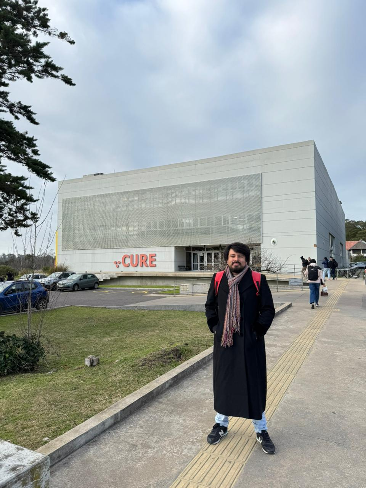
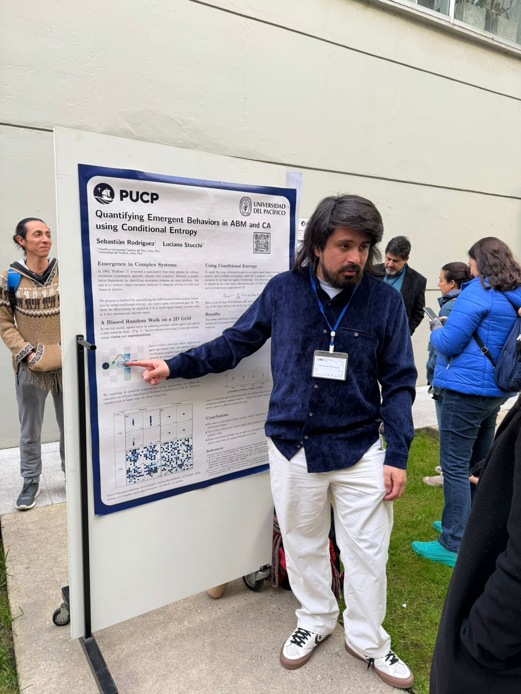

About me
Bachelor of Science in Physics from Pontificia Universidad Católica del Perú (PUCP).
My current work on complex systems builds on my research with the Complex Systems and Non-Linear Dynamics Group (GSC-PUCP), where I focus on social and ecological systems. As part of my broader interest in computational social science, I have also shared this knowledge through open classes on using NetLogo for research in this area.
At Wolfram Research, I work as a researcher and developer in Quantum Computing, focusing on variational algorithms and their application to optimization problems.
I am currently part of the Open Quantum Institute team for Smart Grid Management, an initiative hosted by CERN.
📄 Publications
Explore My Computational Essays and Research Papers!2025
- Quantifying Emergent Behaviors in Agent-Based Models using Mean Information Gain | ArXiv
- Symbolic methods in quantum optimization: introduction to QAOA-in-QAOA
- Exploring the quantum approximate optimization algorithm (QAOA) through the Max-Cut problem
- Billiard dynamics: from regularity to chaos
2024
- Quantum Potato Chips | arXiv
- Multiplexer-based variational quantum linear solver
- Quantum locking mechanism using quantum phase estimation and phase kickback for ASCII passwords
- Variational quantum linear solver
- Natural gradient descent optimization for quantum circuits with Fubini–Study
- Parameter Shift-Rule to Differentiate Qubit Gates: Stochastic and Approximate Stochastic Algorithms metric tensor
🎤 Conferences & Talks
-
Quantum and Sustainability Workshop - Open Quantum Institute, IBM & Venturus
Speaker at the Quantum and Sustainability Workshop (IBM Brasil / COP30), presenting on Symbolic Quantum Optimization. -
Quantum Hackaton LATAM 2025 - Open Quantum Institute
Mentored the team ’Q-Quest Distribution’ in developing a quantum optimization model for efficient water distribution during disaster scenarios in Colombia. -
Conferencia Latinoamericana de Innovación, Tecnología y Negocios (Innovatech 2025)
-Talk on "A Biased Random Walk Model of Collective Imitation" -Organized by Universidad del Pacífico (PE) and IEEE. -
Wolfram Tech Talk 2024
Talk on "Variational Quantum Algorithms and Hybrid Optimization Methods" -
IBM Qiskit Hands-On Workshop
- Talk on "Quantum Natural Gradient Descent for Optimization".
- Organized by Zeta Science Forum.
- Collaboration with IBM Qiskit and School of Mathematics and Computer Science, IBA Karachi. -
PUCP Colloquium
Talk on "Quantum Natural Gradient Descent in Variational Quantum Circuits" -
Knowledge Share – Open Quantum Institute (CERN)
- Talk on "Demystifying QAOA: Symbolic Methods in Quantum Optimization".
🧠 Complex Systems
Research Assistant at PUCP’s Complex Systems and Non-Linear Dynamics Group.
- Quantifying Emergent Behaviors in ABM and CA models Using Conditional Entropy (Current Research)
- Developed agent-based models of biased random walks showing macro-agent emergence.
- Proposed a novel methodology to quantitatively identify emergent patterns.
- Under the guidance of Dr. Luciano Stucchi.
Poster presentation at 4th Latin American Conference on Complex Networks - LANET 2025 
- Introduction to Complexity and Agent-Based Modeling.
Delivered a free, full-length introductory courses in Spanish on modeling complex systems using NetLogo, aimed at Peruvian undergraduate students.
- Paper review: Modelos de Influencia Social.
Paper review on "Stochastic events can explain sustained clustering and polarisation of opinions in social networks" by Scott A. Condie & Corrine M. Condie.
-
200 Embajadoras del Bicentenario - Embassy of the United States in Peru & Concytec
Selected as a STEM specialist to deliver science and technology workshops about agent-based computational models to 200 girls aged 6–12 from all 25 regions of Peru, primarily from under-resourced backgrounds.
⚛️ Quantum Computing
My projects and contributions are available on the Wolfram Community website.
Original educational resources I developed to support learning and research in quantum optimization:
-
Introduction to Quantum Optimization – Computational Book
- A full introduction to quantum optimization using the Wolfram Quantum Framework.
- Covers: Variational Quantum Eigensolver, Quantum Approximate Optimization Algorithm, Quantum Natural Gradient Descent, and Variational Quantum Linear Solver. -
Wolfram U Course: Daily Study Group on Quantum Optimization
Five-day study group introducing both foundational and advanced variational algorithms for quantum optimization. -
Quantum Optimization Tech Note
Official documentation on quantum optimization methods using the Wolfram Quantum Framework. -
Wolfram Summer School 2024
Mentor from the following projects:
- Finding patterns in quantum information: a computational approach
- Electronic structure of atoms using quantum computing techniques
- Studying the effects of noise in simple quantum logical systems
🌱 Research Group Initiative
I launched an initiative to establish a formal research group in complex systems in Peru. The effort has received early support from:
- Pontifical Catholic University of Peru (PUCP)
- Universidad del Pacífico
- Wolfram Research
The goal is to promote research on ecological, social, and computational complexity. Activities will include collaborative projects, seminars, and public outreach to strengthen the regional research ecosystem.
Once I complete formal training in Complex Systems, I plan to return and fully consolidate this initiative as a transdisciplinary research hub.